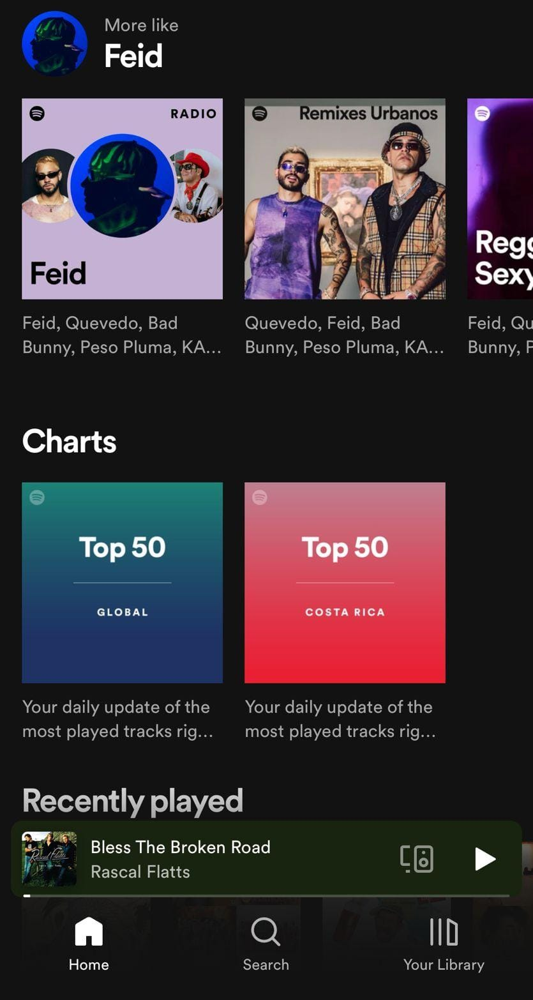
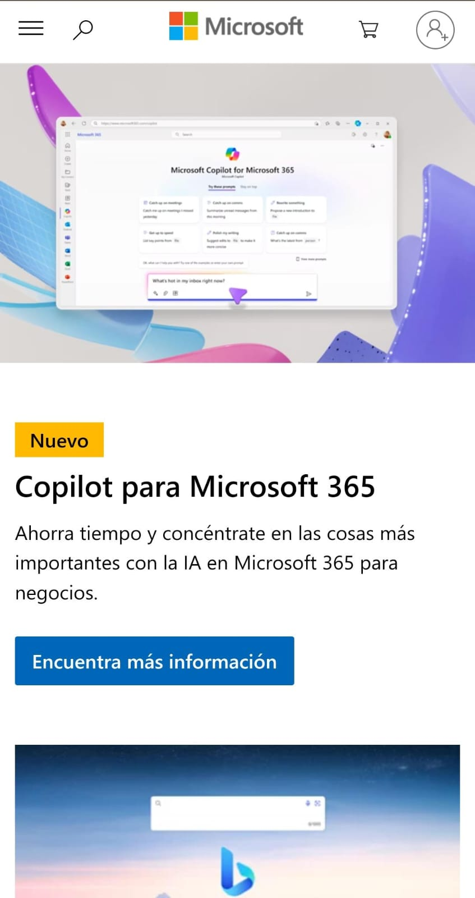
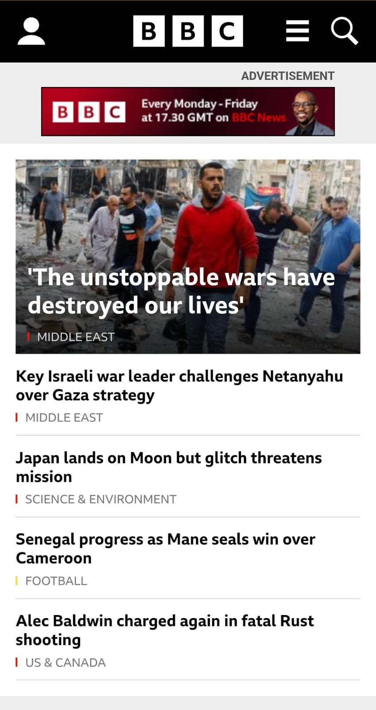

Contrast
Spotify
Spotify utilizes contrast in its user interface, making essential elements, such as play buttons and album covers, stand out against the background. Contrast enhances visual hierarchy and user interaction.
Alignment
Microsoft
Microsoft's website uses alignment to organize content, ensuring that text, images, and interactive elements are visually cohesive. This contributes to a structured and harmonious layout.
Repetition
BBC
BBC's website employs repetition in article layouts and module designs, ensuring a consistent visual language across various sections. This enhances user familiarity and readability.